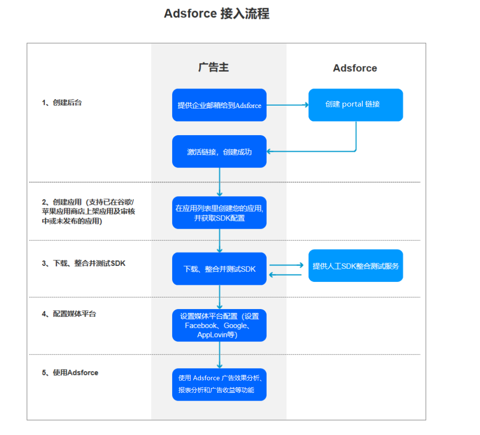

欢迎使用 Adsforce
Adsforce 为移动广告效果分析平台的领军者，专为游戏出海打造，致力于帮助广告主精确找出其受众、优化广告活动并获取最优 ROI。
1. Adsforce 优势
- 更强实时性 - 应用先进的高性能实时大数据系统构建，能够实现对原始数据秒级分析，并可以将报表多维度的呈现在 Adsforce 平台上；
- 更高性价比 - 系统可以无缝运行在多个云平台上，从而降低产品成本；
- 更加智能化 - 团队拥有丰富的大数据处理、机器学习及 DevOps 等相关经验，从而使 Adsforce 更加智能化。
2. 什么是广告效果分析平台？
广告效果分析平台是用于衡量因市场营销活动导致的应用安装或安装后事件的一种方式，对用户获取、用户参与度的提升和用户回归起到十分关键的作用。
了解更多广告效果分析平台。
3. Adsforce 如何实现效果分析？

想要更好的了解 Adsforce？请查看我们的入门指南。
有关 SDK，可参考 SDK集成。
查看Adsforce 术语解析， 请点击此处。